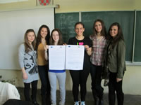

Aktivnosti na otvorenom koje predviđa projekt održavat će se sljedećim redoslijedom: 17.05.2014. (subota) Maksimir, 15.06.2014.(nedjelja) Bundek, 21.06.2014.(subota) Sljeme
OBJAVA ZA TISAK - PROJEKT "OJ, BUDI ZDRAV!"
Projekt "Oj, budi zdrav!" osmišljen je kao svojevrsna kampanja s ciljem poticanja mladih srednjoškolaca na bavljenje sportom ili nekim oblikom fizičkih aktivnosti te osvještavanja važnosti zdravih prehrambenih navika. On se izravno bavi promocijom zdravog načina života pomoću aktivnosti na otvorenom te tako odgovara godišnjem prioritetu programa "Mladi na djelu" Agencije za mobilnost i programe Europske Unije (AMPEU). Projekt je odobrila AMPEU, a financira ga Europska komisija.
Ideju projekta osmislile su i razvile učenice Treće ekonomske škole iz Zagreba u sklopu izvannastavne aktivnosti koju provodi udruga "Parlament mladih grada Zagreba" (PMZG). Parlament mladih institucionalan je oblik rada s mladima s ciljem intenziviranja suradnje između učenika osnovnih i srednjih škola, studenata visokoškolskih ustanova i općenito mladih ljudi s jedne strane, nevladinih udruga s druge strane te tijela gradske uprave i samouprave s treće strane. Krajnji je cilj uključivanje mladih u poslove zajednice i povećanje njihova utjecaja u procesu donošenja odluka. Udruga "PMZG" provodi niz aktivnosti u sklopu raznih projekata kao što su npr. "Demokratizacija odnosa u školi" ili "Vršnjačka pomoć"  nastalih unutar samog Parlamenta i/ili na nivou Nacionalnog saveza parlamenta mladih RH (NSPMRH).
U siječnju 2013. ostvarili smo suradnju s nevladinom udrugom "Ostvarenje" iz Zagreba te s njima krenuli u realizaciju radionica o europskom građanstvu, europskim vrijednostima, općenito o EU i na kraju o mogućnostima osobnog razvoja i usavršavanja mladih pozitivnim doprinosom putem volontiranja. U sklopu radionice, koja je imala za temu program "Mladi na djelu", došli smo do ideje da napišemo projekt koji bismo prijavili na financiranje za podakciju "Inicijativa mladih". Tako je nastao projekt "Oj, budi zdrav!"
Prvi korak jest ispitati učestalost fizičkih aktivnosti i prehrambene navike mladih anketom koja će biti provedena na nivou Treće ekonomske škole u Zagrebu, koju pohađa oko 550 učenika. Nakon provedbe ankete prikupljeni podaci bit će analizirani, prikazani grafički te prezentirani školi i široj javnosti putem plakata i tiskanih publikacija s ciljem podizanja svijesti o važnosti zdrave prehrane i fizičke aktivnosti za zdravlje. U svibnju i lipnju 2014.g. tijekom tri subote bit će prezentirani atipični sportovi (žongliranje, ples/akrobacije na svili, krav maga, capoeira, akrobatski rock 'n' roll, street runing, yoga, pilates...) na otvorenom, zajedno sa štandovima odgovarajuće prehrane na tri različite lokacije u gradu Zagrebu (Bundek, Maksimir, Sljeme). Svi posjetitelji moći će aktivno sudjelovati u vježbanju te konzumirati zdrave obroke koje će nositelji projekta i volonteri sami pripraviti. Ujedno će moći potpisati peticiju koja će zajedno s tiskanom publikacijom poslužiti za lobiranje kod ravnatelja škole i Ministarstva znanosti, obrazovanja i sporta da se uvedu promjene u školski program tjelesnog odgoja kako bi se promijenio negativan stav učenika da je tjelesni, odnosno, fizička aktivnost dosadna i nezanimljiva. Iskreno se nadamo kako ćemo zadane ciljeve postići i ovim malim projektom potaknuti mlade srednjoškolce na izgradnju zdravog i aktivnog stila života kao čvrstog temelja za osobni rast i sreću!